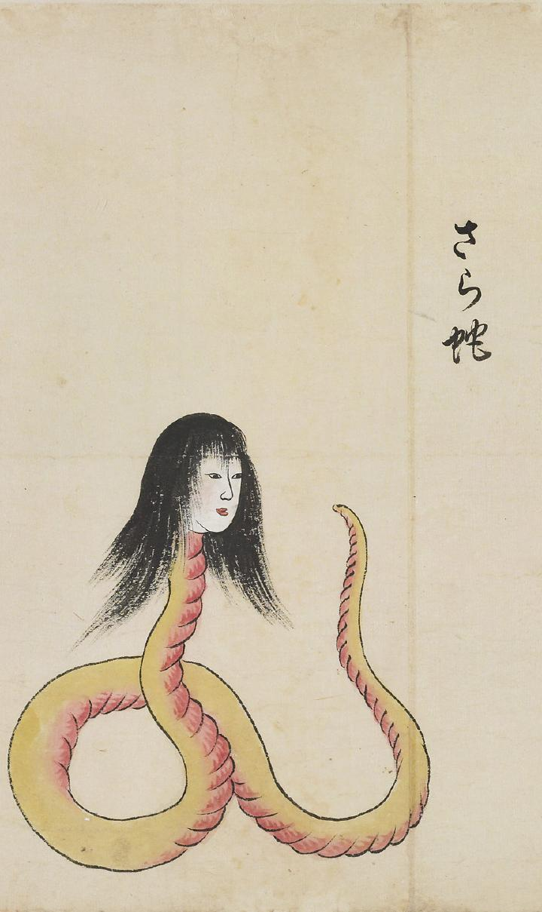

人間の頭部を有した蛇の化物。身体は黄色い。
著作者：北斎季親／出典：親書誌：U426_nichibunken_0052：化物尽絵巻；バケモノヅクシエマキ／日付：2007／資源識別子：U426_nichibunken_0052_0004_0000
Copyright (c)2010- International Research Center for Japanese Studies, Kyoto, Japan. All rights reserved.